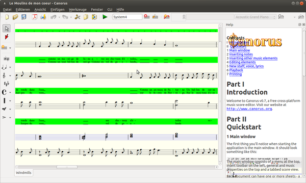

Canorus
Dieser Artikel wurde für die folgenden Ubuntu-Versionen getestet:
Ubuntu 14.04 Trusty Tahr
Zum Verständnis dieses Artikels sind folgende Seiten hilfreich:
Canorus  ist ein Programm zum Notensatz und Wiedergabe von Partituren. Unterstützt werden das Schreiben von Noten, Im- und Export verschiedenen Formate (midi, musicXML), Midi-Ein- und Ausgabe. Verwendet wird das Qt4-Framework, Canorus kann unter Linux, Windows und MacOSX verwendet werden. Die Canorus-Entwickler hatten vor dem Canorus-Projektstart einige Zeit NoteEdit weitergeführt. Der eigentliche Autor hatte die Entwicklung komplett eingestellt, um dann später mit nted ein neues Projekt zu starten. Leider stagnierte das Canorus-Projekt zeitweise, allerdings erfolgte im Frühjahr 2013 eine grundlegende Behebung vieler Probleme. Das Ziel, den Funktionsumfang des Vorgängerprogramms zu erreichen, liegt allerdings noch in weiter Ferne. Die Oberfläche ist noch nicht vollständig "lokalisiert", sodass etliche Dinge noch in Englisch erscheinen.
ist ein Programm zum Notensatz und Wiedergabe von Partituren. Unterstützt werden das Schreiben von Noten, Im- und Export verschiedenen Formate (midi, musicXML), Midi-Ein- und Ausgabe. Verwendet wird das Qt4-Framework, Canorus kann unter Linux, Windows und MacOSX verwendet werden. Die Canorus-Entwickler hatten vor dem Canorus-Projektstart einige Zeit NoteEdit weitergeführt. Der eigentliche Autor hatte die Entwicklung komplett eingestellt, um dann später mit nted ein neues Projekt zu starten. Leider stagnierte das Canorus-Projekt zeitweise, allerdings erfolgte im Frühjahr 2013 eine grundlegende Behebung vieler Probleme. Das Ziel, den Funktionsumfang des Vorgängerprogramms zu erreichen, liegt allerdings noch in weiter Ferne. Die Oberfläche ist noch nicht vollständig "lokalisiert", sodass etliche Dinge noch in Englisch erscheinen.
Installation¶
Aus den Quellen¶
Canorus kann direkt aus den Ubuntu-Quellen installiert werden [1]:
canorus (universe)
timidity (optional, zur Wiedergabe, wenn keine Midi-fähige Soundkarte verwendet wird)
fluidsynth (optional, Software-Synthesizer als Alternative zu Timidity)
qsynth (optional, GUI für fluidsynth)
 mit apturl
mit apturl
Paketliste zum Kopieren:
sudo apt-get install canorus timidity fluidsynth qsynth
sudo aptitude install canorus timidity fluidsynth qsynth
Installation aus dem Quellcode¶
Diese Installationsart empfiehlt sich für Ubuntu-Versionen vor Ubuntu 13.10. Die aktuelle Version lässt sich aus dem Quellcode-Archiv aus der Downloadseite  herunterladen, entpacken[2] und kompilieren[3] (z.B. um mit nted erstellte Midi-Dateien öffnen zu können).
herunterladen, entpacken[2] und kompilieren[3] (z.B. um mit nted erstellte Midi-Dateien öffnen zu können).
Benötigt werden neben den üblichen Entwicklerpaketen außerdem
cmake
libqt4-dev
swig2.0
python-dev
python-cxx-dev
lyx (optional, für die Hilfefunktion)
tex4ht (optional , für die Hilfefunktion)
mit apturl
Paketliste zum Kopieren:
sudo apt-get install cmake libqt4-dev swig2.0 python-dev python-cxx-dev lyx tex4ht
sudo aptitude install cmake libqt4-dev swig2.0 python-dev python-cxx-dev lyx tex4ht
Die Kompilierung erfolgt mit cMake im Download-Verzeichnis. Zunächst, wenn gewünscht, im Unterverzeichnis doc/userguide mit
make
die Hilfefunktion erstellen und dann im Canorus-Verzeichnis
cmake .
ausführen, danach normal erstellen und installieren[3]. Alternativ kann auch im Download-Verzeichnis mit dem Befehl
sudo debian/rules binary
ein .deb-Paket erstellt werden.
Tonausgabe über Software-Syntheziser¶
Falls keine MIDI-fähige Soundkarte vorhanden ist, muss die Tonausgabe über einen Software-Synthesizer erfolgen. Um z.B. eine TiMidity-Port für die Wiedergabe nutzen zu können, wird TiMidity im Terminal [2] mit dem Befehl
timidity -iA -B2,8 -Os1l -s 44100
gestartet. Im Programm kann dann unter "Werkzeuge -> Einstellungen -> Wiedergabe" im rechten Fenster ("beschreibbare MIDI-Geräte") ein Port für die Wiedergabe gewählt werden. Um TiMidity sofort mit dem Programm auszuführen, lässt sich ein kleines Skript erstellen, das zunächst TiMidity-Ports öffnet, und dann Canorus startet:
1 2 3 4 | #/!bin/bash timidity -iA -B2,8 -Os1l -s 44100 & canorus && killall timidity |
Das Skript ausführbar machen, und ggf. als Startbefehl im Hauptmenü hinterlegen; TiMidity wird mit Beenden des Programms geschlossen.
Alternativ kann zur Tonausgabe auch FluidSynth mit der Oberfläche qsynth genutzt werden, beide in den Ubuntu-Quellen vorhanden. Mit Qjackctl kann man dann einfach die Verbindungen schalten, falls JACK verwendet wird.

Bedienung¶
Nach dem Start[4] öffnet sich eine Bearbeitungsfenster, in dem Partituren angezeigt werden, rechts kann bei Bedarf eine kurze Befehls-Übersicht angezeigt werden. Je nach verwendetem Modus (Auswahl- bzw. Editiermodus, Schaltfläche mit weißem bzw. rotem Pfeil) verändern sich die Bearbeitungsmöglichkeiten über Seitenleiste und das Menüpanel oben. Gewechselt werden kann der Modus auch über die Tasten E (Editiermodus, erkennbar auch am Roter Rahmen um das Notenblatt) und I (Insert=Einfügemodus, blauer Rahmen), Esc führt zurück zum Auswahlmodus.
Kontexte¶
Canorus arbeitet für die Partiturerstellung mit sogenannten "Kontexten". Grundlegend sind die Notensysteme, in denen Schlüssel, Taktmaß und -striche, Tonart, Noten, Pausen, Zeichen etc. festgehalten werden. Als weitere Kontexte können Textzeilen (Strophen), Bass-Notierungen und Akkord/Funktions-Notierungen eingesetzt werden.
Notensysteme¶
Beim Start wird ein leeres Blatt mit zwei Systemen im Violin- und Bassschlüssel angezeigt. Um weitere Systeme einzufügen, im Auswahlmodus in der Seitenleiste das Kontextmenü aufklappen, und dort "neues System" (Notenlinien mit Stern) auswählen; mit einem  -Klick im Notenblatt wird an der Stelle des Mauscursors ein neues System eingefügt, Schlüssel und Taktart/-linien entsprechend über die jeweiligen Seitenleisten-Menüs. Noten lassen sich nach Auswahl der Länge (Dropdown-Menü oben im Panel oder über die Nummerntasten) mit setzen, die entsprechenden Pausen mit
-Klick im Notenblatt wird an der Stelle des Mauscursors ein neues System eingefügt, Schlüssel und Taktart/-linien entsprechend über die jeweiligen Seitenleisten-Menüs. Noten lassen sich nach Auswahl der Länge (Dropdown-Menü oben im Panel oder über die Nummerntasten) mit setzen, die entsprechenden Pausen mit  , gewünschte Vorzeichenänderungen (
+ ,
- ) oder eine Punktierung (
. ) lassen sich ebenfalls zuvor festlegen. Zu den Noten können dann zusätzlich Bögen, Markierungen und Artikulationszeichen gewählt werden, die dann mit einem auf die entsprechende Note hinzugefügt werden.
, gewünschte Vorzeichenänderungen (
+ ,
- ) oder eine Punktierung (
. ) lassen sich ebenfalls zuvor festlegen. Zu den Noten können dann zusätzlich Bögen, Markierungen und Artikulationszeichen gewählt werden, die dann mit einem auf die entsprechende Note hinzugefügt werden.
Noteneingabe über Keyboard¶
Noten können auch direkt mit einem angeschlossenen Keyboard über die Midi-Schnittstelle eingegeben werden, zu Testzwecken lässt sich vkeybd (eine virtuelles MIDI-Klaviatur aus dem gleichnamigen Paket vkeybd) verwenden. Dazu das virtuelle Keyboard starten, und in "Werkzeuge -> Einstellungen -> Wiedergabe" im Fenster "lesbare MIDI-Geräte" den Eintrag "Virtual Keyboard:X" auswählen. Im Notenblatt dann die gewünschte Zeile auswählen (Auswahlmodus), und im Kontextmenü die Noteneingabe aktivieren. Bei Anschlagen der "Tasten" auf dem virtuellen Keyboard werden die Noten im Blatt aufgezeichnet, wenn das Keybord über Qjackctl mit einem Midi-Ausgabeport verbunden ist, wird der Ton auch gleichzeitig ausgegeben. Canorus erkennt allerdings keine vkeybd-Instanzen, die mit einer MIDI-Adresse gestartet wurden , also etwas wie 'vkeybd --addr 132:1'.
Theoretisch lässt sich auch die MIDI-Aufnahme-Funktion ("Werkzeuge -> Midi recorder") zum Aufzeichnen von Noten nutzen, die Funktion ist aber laut Entwickler nicht wirklich ausgereift.
Textkontext¶
Über die "Kontextauswahl -> Textkontext" können (im Auswahlmodus) den Notenlinien auch Texte zugeordnet werde. Nach dem Einfügen beziehen sich diese zunächst immer auf die Notenwerte des obersten Systems, sie können aber frei zugeordnet werden. Wenn man das grüne Kontextband im Notenfenster anklickt, erscheinen oben im Panel die Auswahlmöglichkeiten für die Textkontext (Name, Strophennummer, System und Stimme, sowie die Löschfunktion und Eigenschaften). Die Zuordnung erfolgt über "System und Stimme", es ist möglich, Texte verschiedene Stimmen im selben System zuzuordnen. Meist platziert man den Text vermutlich unter die jeweilig verwendete Stimme, es ist allerdings auch eine notensystemunabhängige Zuordnung möglich. Im Ausdruck wird der Text aber nach den gewählten Zuordnung ausgegeben. Für mehrere Strophen können jeweils eigene Kontexte angelegt und entsprechend zugeordnet werden.
Den Text selbst fügt man hinzu, indem man im Auswahlmodus den gewünschten Kontext anklickt, und dann in der Seitenleiste die "La"-Schaltfläche aktiviert. Jetzt öffnet ein -Klick im grünen Band unter der gewünschten Note ein kleines Fenster, in dem der zugehörige Text eingefügt werden kann. In diesem Fenster führt eine
⇧ +
- ("_") im Wort zu einer Leerstelle in der Eingabe, eine
hingegen beendet die Eingabe zu der Note und öffnet das Fenster der nächsten Note. Ein
- +
fügt eine Bindestrich zwischen den Silben eines auf mehrerer Noten verteilten Wortes ein und wechselt zur nächsten Note, ein
⇧ +
- +
fügt für mehrnotige Silben ein Melisma am Ende der Silbe ein.
Bass/Funktionskontexte¶
Nach dem selben Prinzip lassen sich Bassmarkierungen (cyanfarbenes Band) und Funktionskontexte (gelbes Band) anlegen. Den gewünschten Kontext anwählen, nach Betätigung der "figured bass mark"- bzw. "Funktionszeichen"-Schaltfläche unterhalb des Kontextsymbols in der Seitenleisten können über das Panelmenü die gewünschten Markierungen ausgewählt und per in an den gewünschten Stellen in den Bändern eingefügt werden.
Partiturinformationen¶
Über "Editieren -> Dokumenteigenschaften" lässt sich ein Fenster aufrufen, in dem die Angaben zum Titel, Komponist, Texter und Arrangeur gemacht werden können, unter "Erweitert" können auch Angaben zum Copyright, Widmungen, Kommentare etc. zugeordnet werden. In der Vorschau kann man die Einträge überprüfen.
Fenster¶
Partituren können in Canorus in mehreren Ansichten des selben Dokumentes bearbeitet werden, was gerade bei mehrstimmigen Projekten die Arbeit erleichtern kann. Dazu im Reiter "Fenster" weitere Fenster ("Neues Fenster" = mit Anzeige der kompletten Bearbeitungsfunktionen, in denen auch andere Partituren geöffnet werden können) oder kleiner "Neue Ansichten", die sich frei auf dem Bildschirm platzieren lassen, auswählen. Außerdem kann das Hauptfenster auch vertikal oder horizontal geteilt werden, um gleichzeitig verschiedene Teile der selben Partitur im Blick haben zu können. Bearbeitungen können global wirksam in allen Ansichten vorgenommen werden.
Ausdruck und Export¶
Die Ausgabe ist in verschiedenen Formaten möglich. Die Druckvorschau erstellt mit LilyPond ein PDF, das im Standard-PDF-Betrachter der verwendeten Distribution geöffnet wird. Dort kann man die Ausgabe kontrollieren, da im Programmfenster keine direkte (WYSIWYG) Anzeige erfolgt. Standardmäßig werden die Partituren entweder in einem Canorus-eigenen Archiv-Typ (.can) oder als musicXML-Datei gespeichert, siehe "Werkzeuge -> Einstellungen". Aus Ausgabeformate stehen über "Datei -> Export" die Formate LilyPond (.ly), musicXML, Midi, SVG und PDF zur Auswahl.
Quellcode-Monitor¶
Über "Ansicht -> Quellcode Ansicht" lassen sich eine LilyPond- bzw. Canorus-Format-Editor einsetzen, der sich im unteren Teil des Partiturfensters öffnet. Hier können direkt Änderungen am Quellcode der gerade geöffneten Partitur vorgenommen werden, wozu man natürlich mit der Syntax der Formate vertraut sein sollte.
Tastenkürzel im Notenblatt¶
 -Mausrad
-Mausrad Problembehebung¶
Bestimmte Notierungen werden im PDF nicht angezeigt¶
Die Notierungen lassen sich zwar setzen, allerdings ist zum einen teilweise eine Anpassung an den gewünschten Bereich nicht möglich, zum anderen werden einige Markierungen zwar bei der Wiedergabe berücksichtigt, aber im Ausdruck/Export nicht ausgegeben, letzteres betrifft z.B. die Tempo-Angaben. Bei eingefügten Crescendo/Decrescendo-Linien erscheint, wenn man die Maus darüber platziert, zwar ein Pfeilsymbol, ein Ziehen auf die gewünschte Länge gelingt aber nicht.
Laut Auskunft eines Hauptentwickers ist Canorus ist nicht in der Lage, kompliziertere Notierungen zu erstellen und in LilyPond-Syntax auszugeben. Wenn man derartige Notierungen benutzen will, kann man die erstellten LilyPond-Dateien aber anderweitig entsprechend editieren, vorzugsweise mit Frescobaldi.
System/Stimmzuordnung bei Midi-Import¶
Bei importierten Midi-Dateien ist die Namenszuordnung fehlerhaft, Canorus erstellt keine eindeutigen Namen für die einzelnen Systeme und Stimmen. Damit ist auch eine eindeutige Zuordnung von weiteren Kontexten nicht möglich. Dieser Bug ist in der aktuellen SVN-Version behoben,
Umlaut in Dateinamen¶
Importierte Dateien dürfen keine Umlaute enthalten; das Programm stürzt sonst mit Fehlermeldung und backtrace-Ausgabe im Terminal ab.
Programm startet nach Absturz nicht¶
Canorus versucht standardmäßig, bei Neustart die Dateien wiederherzustellen, die während eines Absturzes bearbeitet wurden. Dieses an sich löbliche Verhalten kann aber - bei beschädigten Dateien - dazu führen, dass Canorus sich mit einer Fehlermeldung der Art ASSERT failure in QList<T>::at: "index out of range" nach dem Start gleich wieder verabschiedet. In dem Falle kann man im Verzeichnis ~/.config/canorus die recoveryX-Datei löschen (eine Notfall-musicXML-Datei, in der der letzte Zustand gespeichert wurde), sodass eine Wiederherstellung nicht versucht wird.
Programm stürzt beim Schließen ab¶
*** glibc detected *** canorus: double free or corruption (!prev): 0x0000000002ff3500 ***
Ein bekannter Bug der 0.7.1rc-Version, umgehbar, indem man das Programm ohne das Python-CLI erstellt (dazu die cmake-Option -DNO_PYTHON=1 einsetzen). Allerdings wird dann beim Start keinen neues Blatt erzeugt, und auch der LilyPond-Editor ( "Ansicht -> Quellcode Ansicht- LilyPond-Format") ist nicht aufrufbar.
Strophenerstellung führt zu Absturz¶
Der Versuch der Strophenerstellung führt häufig zum Absturz mit Meldungen wie
*** glibc detected *** canorus: free(): invalid next size (fast): 0x00000000021eb040 ***
und nachfolgendem backtrace, oder mit etwas wie
*** glibc detected *** canorus: malloc(): memory corruption: 0x00000000023dd180 ***
Die Anwendung hängt sich auf und muss abgeschossen werden.
Abhilfe schafft die Kompilierung der aktuellen Entwicklerversion.
svn checkout svn://svn.code.sf.net/p/canorus/code/trunk canorus-0.7.x
In das Verzeichnis wechseln und wie oben angegeben erstellen.
Alternativen¶
nted - Fortführung des aufgegebenen NoteEdit durch den Hauptentwickler, inzwischen leider auch unbetreut.
MuseScore - grafisches Notensatzprogramm für Linux, Windows und Mac OS X, bietet einen WYSIWYG-Partitur-Editor mit vielen Funktionen.
LilyPond - Satzprogramm, hat allerdings keine direkte Wiedergabe-Funktion, wird von Canorus für die Druck-/PDF-Ausgabe verwendet.
- Erstellt mit Inyoka
-
 2004 – 2017 ubuntuusers.de • Einige Rechte vorbehalten
2004 – 2017 ubuntuusers.de • Einige Rechte vorbehalten
Lizenz • Kontakt • Datenschutz • Impressum • Serverstatus -
Serverhousing gespendet von